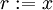
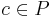
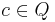
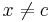
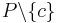

The Celebrity Problem (Rodin Tutorial)
From Event-B
The next model that you will work with is the so-called celebrity problem. In the setting for this problem, we have a “knows” relation. This relation is defined so that
- no one knows himself,
- the celebrity knows nobody, but
- everybody knows the celebrity.
The goal is to find the celebrity. The provided development, once completed, yields a linear-time algorithm for the problem.
Modeling
- Make sure that you have no existing Project named Celebrity. If you do, then rename it (Section 1.7 in the Manual). Then import the archive file Celebrity.zip. For this, choose “Import…” in the File menu, and then select “Existing Projects into Workspace”. Then, select the according archive file. (Read more on importing projects in section 1.6 of the Manual)
- The tool takes a few seconds to extract and load all the files. Once it is done, it shows that there are a few problems with this project. In the first part of this section, our goal is to fix these problems and conclude the proofs.
- First of all, we take a look at the error. It states that an event called “celebrity” is not refined. Double-click on the error in the Problem Window to open the Celebrity_1 machine. If you look at its events (by pressing the “Events” tab), you can see that it actually does have a “celebrity” event. The problem is that it is not declared as a refinement. In order to do so, right-click on the event and select “New Refine Event”. This declares that the event is a refinement of an event with the same name in the abstract machine. As this is the case here, we can now save the project and the error disappears. (If the event in the abstract machine had a different name, you would have to edit it. For more on this issue, see Section 3.9.1 of the Manual).
- Next, we deal with the warnings. The three remaining warnings state that witnesses are missing. In any abstract event that uses parameters, if the concrete event has no parameter with the same name, the tool needs a witness so that it notices what value the parameter should take. Witnesses are also needed for variables that have a nondeterministic assignment in an abstract event and do not appear in the concrete model. To create the witness (Section 3.9.4 of the Manual), double-click on the warning to open the concrete model (here Celebrity_2). Then, right-click on the “celebrity” event and select “New Witness”.
- An empty witness has been created, which we need to fill. Its name will have to be x if we want it to be a witness for the parameter x. Next, for the content. If we switch between the two machines (either by pressing Ctrl+F6 or by clicking on their tabs), we see that the abstract event has the assignment , while the concrete one has the assignment
 . So, x = b is the witness. Edit the Details and save the file. One warning will disappear, two to go.
. So, x = b is the witness. Edit the Details and save the file. One warning will disappear, two to go.
- Try completing the other two witnesses on your own. A hint: Both witnesses are simple equalities, and both can be found by comparing the third guard of the abstract event with the second guard of the concrete one. Remember to give the witness the name of the variable it stands for. If you completed this step correctly, there should be no warning, info or error left on the Problems window.
Proving
- All we have to do now is prove. Switch to Proving Perspective. Browsing around in the Obligation Explorer (Section 5 of the Manual shows you how), you can see that the auto-prover did quite a good job. If you have chosen the witnesses correctly, all except for five proofs already should be completed. Except for the last one of them, all of them could be proved with a different external prover, but in order to learn a few new techniques, we will prove them with the p0 prover.
- Let’s start with the proof in Celebrity_0. Select the proof by clicking on it. What you need to prove is that P is not empty. Enter P in the proof control and open the Search Hypothesis Window. Like this, you get all hypothesis that have P in them. We need to find one that works toward the goal.  does that, so add it to the selected hypothesis (Section 6.7 of the manual explains how) and click on p0 in the Proof Control. The proof succeeds.
- Next, we look at celebrity/act1/SIM of Celebrity_1. Here we need to prove x = c. You have no hypothesis about c selected, so look for them, like you did for hypothesis with P in the last proof. This time, you can see that  is all you need to conclude the proof. So add it to the selected hypothesis and the proof will succeed using p0.
- remove_1/inv2/INV, is a little more complex. In order to prove the statement, it suffices to prove . so type this into the proof control and press the Add Hypothesis button (ah). Now, press p0 until it does not get you any further. Now, try selecting the right hypothesis by yourself in order to complete the proof. If you cannot find it, you may also just select all hypotheses.
- In order to move to the next proof obligation, you may also use the Next Undischarged PO button of the Proof Control. The next proof can be solved the same way as the last one. You just need to add at least two hypotheses this time.
- In the proof in Celebrity_2, you have to fill in an existential quantifier. First, look in the list of hypothesis if you find any variable that is in P, and select that hypothesis. Then, instantiate b' and R' correctly (For instance, if you want to instantiate b' with c, then  is a good choice for R') by typing the instantiations in the Goal Window and then clicking on the red existential quantifier. Now, all open branches of the proof tree can be proved with p0. After this, we have completed all the proofs, and the model is ready for use.